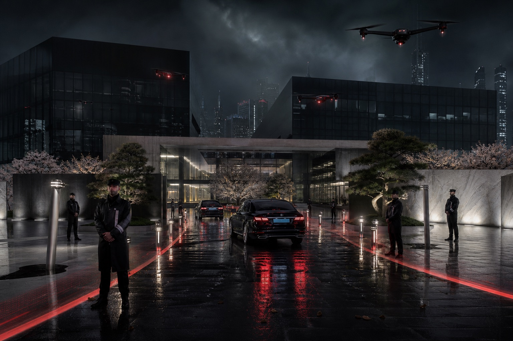

Named security officers retain authority over every escalated response.
 荒坂株式会社
荒坂株式会社Return to productsARASAKA SECURITY SERVICESPERIMETER / MOBILITY / RESPONSE
A protected environment that moves with the people inside it.
Autonomous Perimeter Systems combine aerial surveillance, facility protection, protected mobility, and human-authorized response for critical infrastructure and executive operations.

Integrated aerial, terrestrial, facility, and mobility awareness.
Regional command centers coordinate protection and recovery continuously.
Protection Portfolio
Facilities, routes, and principals protected as one environment.
Arasaka integrates autonomous sensing with trained personnel, regional intelligence, and accountable human command.
 AP-01
AP-01Facility Protection
Persistent surveillance and layered access control for critical sites.
 AP-02
AP-02Protected Mobility
Route intelligence, convoy awareness, and coordinated executive movement.
 AP-03
AP-03Regional Response
Human-led escalation, incident command, and continuity restoration.
Security Boundary
Public safety commitments with restricted tactical implementation.
Formation logic, response envelopes, and tactical configurations are disclosed only after client qualification.